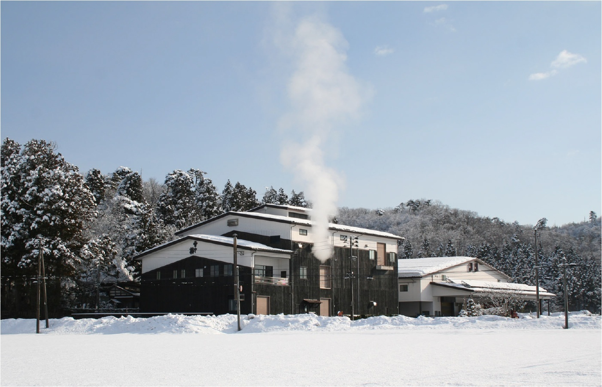
丸山酒造場（新潟県上越市・雪中梅）の雪景色の蔵外観
kura_maruyama.jpg · 1402×902 px
公式ページに「蔵の外観」と明記。冬季撮影。
掲載元を見る · 画像を保存4蔵の外観・商品画像と参考素材。2026年10月14日取得。画像は原寸で保存し、拡大生成はしていません。
画像をクリックして原寸表示。各蔵フォルダ内に英語名のJPEGを保存しています。

kura_maruyama.jpg · 1402×902 px
公式ページに「蔵の外観」と明記。冬季撮影。
掲載元を見る · 画像を保存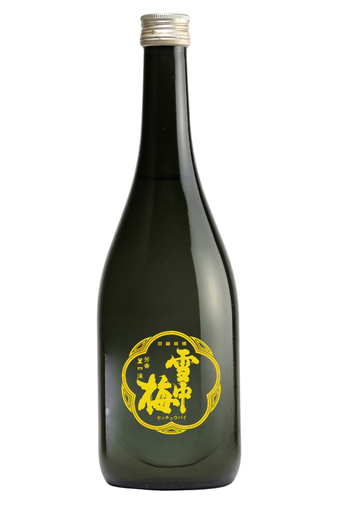
bottle_maruyama.jpg · 1414×2000 px
2026年夏の季節商品。正面ラベルには雪中梅、分類は公式商品名・商品説明で純米吟醸と確認。
掲載元を見る · 画像を保存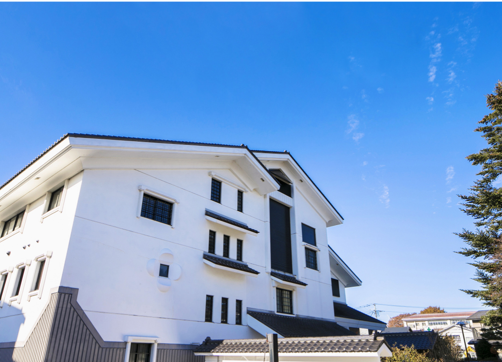
kura_asabiraki.jpg · 1080×780 px
公式の販促資料「昭和旭蔵」。元画像は横1080pxで希望目安1200px未満。拡大せず採用。
掲載元を見る · 画像を保存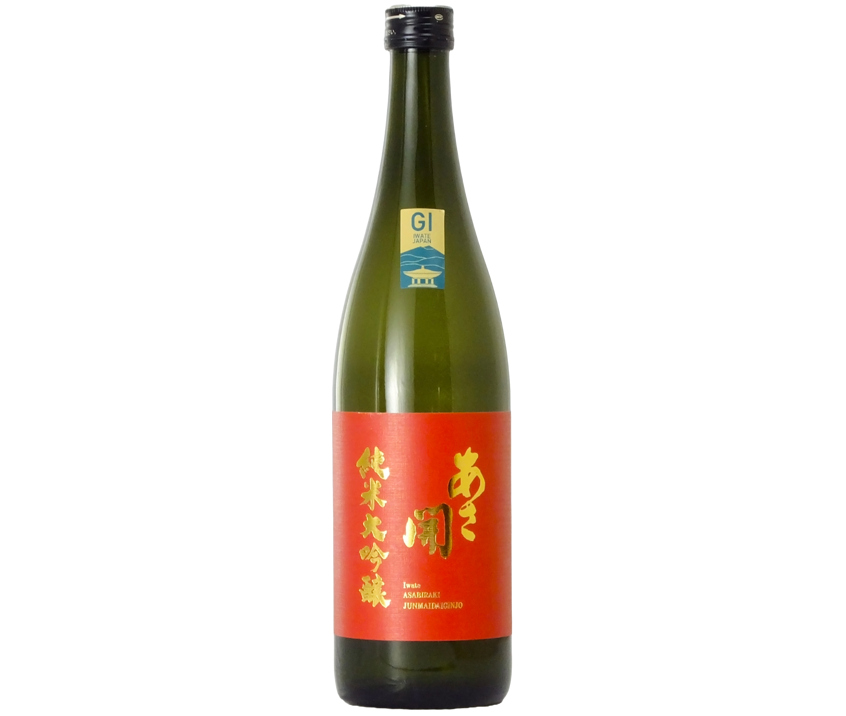
bottle_asabiraki.jpg · 846×716 px
公式の法人向け商品画像。ラベル「純米大吟醸」「あさ開」を目視確認。元画像は846×716px、瓶は余白を含む画面中央に細長く配置。希望目安1200px未満。
掲載元を見る · 画像を保存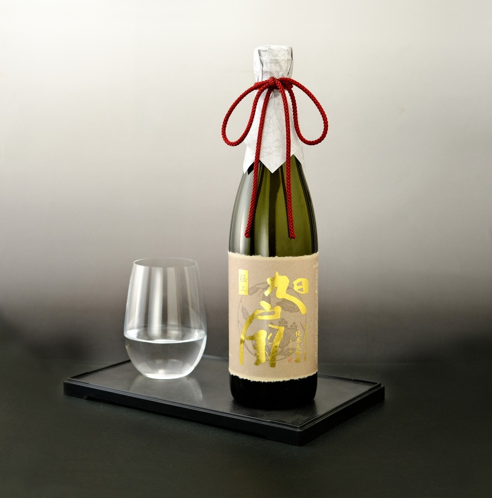
bottle_asabiraki_kyokusen_optional.jpg · 1200×1213 px
赤ラベルとは異なる純米大吟醸。公式法人向け720ml商品画像。瓶全体とグラスの演出写真。
掲載元を見る · 画像を保存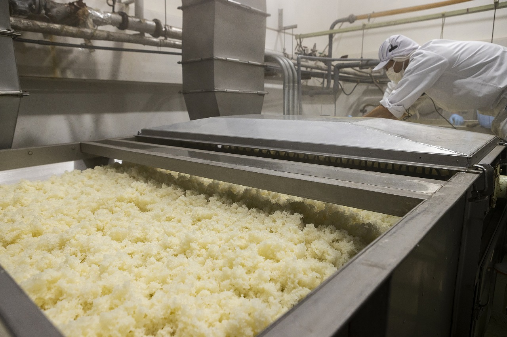
brewing_asabiraki_optional.jpg · 1280×853 px
公式の販促資料「仕込み風景②」。蔵人の製造作業写真で、一般来場者の体験参加写真ではない。
掲載元を見る · 画像を保存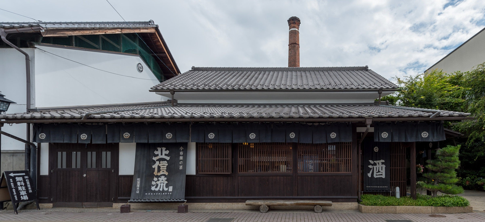
kura_matsubaya.jpg · 2400×1100 px
掲載元を見る · 画像を保存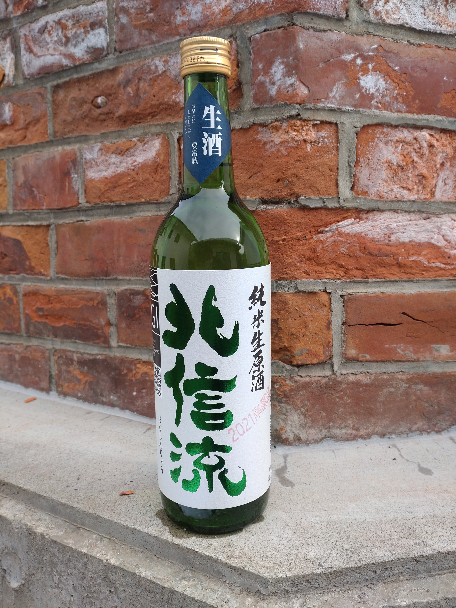
bottle_matsubaya.jpg · 3000×4000 px
現行商品ページの掲載画像だが、ラベルに2021が写る。最新年度・最新ラベルの写真とは断定しない。
掲載元を見る · 画像を保存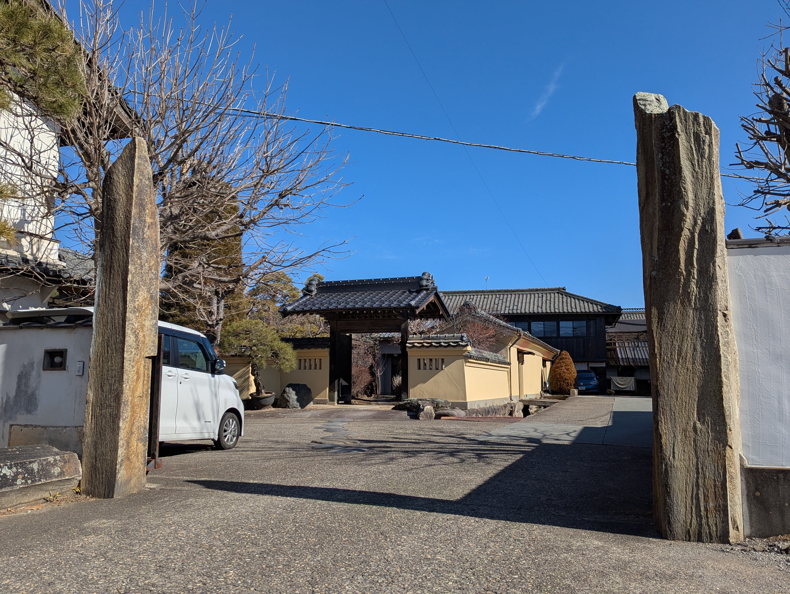
kura_kitsukura.jpg · 4080×3072 px
蔵元の自社サイト掲載画像ではなく、公式観光協会掲載画像。正門・敷地全体の参考用。
掲載元を見る · 画像を保存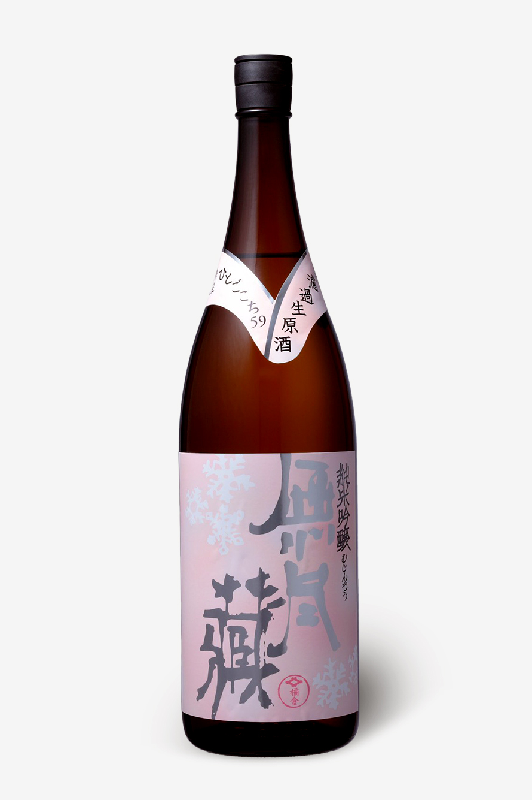
bottle_kitsukura.jpg · 890×1335 px
元画像の幅は890px。高さは1335pxで、幅1200pxの希望は満たさない。拡大補間は行っていない。
掲載元を見る · 画像を保存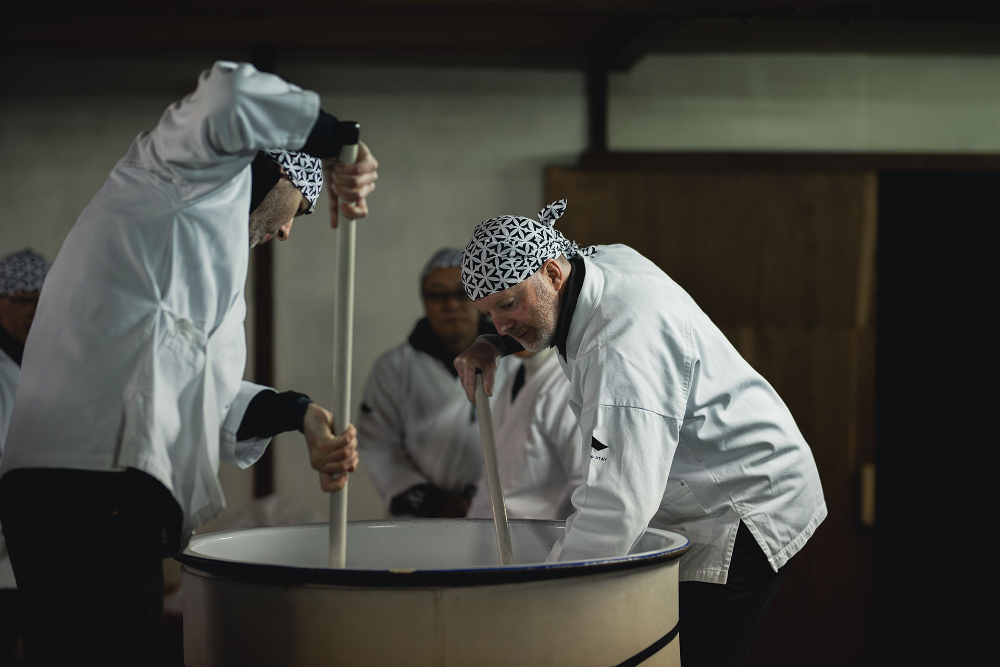
experience_kitsukura.jpg · 1920×1281 px
体験プログラムの紹介写真。特定日の予約・実施可否を示すものではない。
掲載元を見る · 画像を保存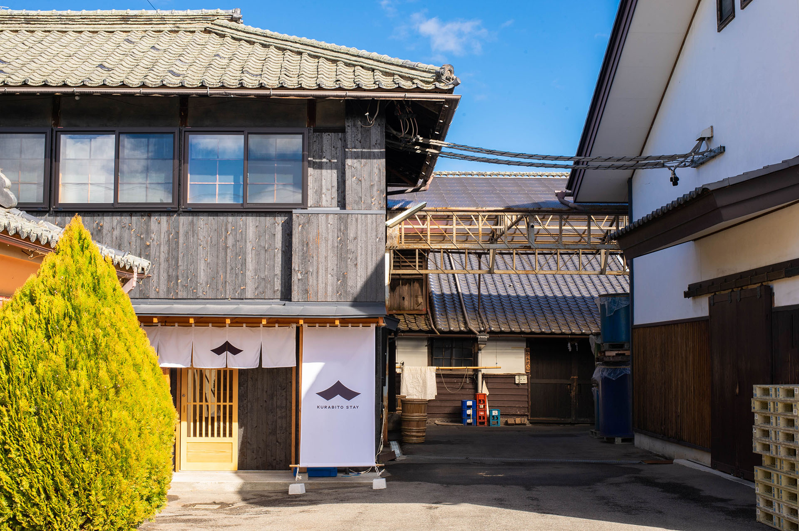
stay_kitsukura.jpg · 1920×1278 px
蔵元敷地内の建物だが、主対象はKURABITO STAY宿泊棟。醸造棟単体や蔵元正面全景ではない。
掲載元を見る · 画像を保存